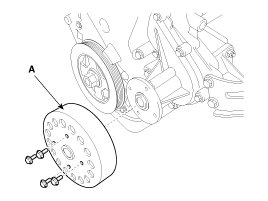
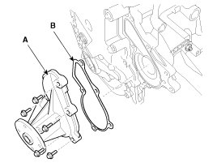

Repair Procedures
Removal and Installation
1. Loosen the drain plug, and then drain the engine coolant. Remove the radiator cap to help drain the coolant faster.
2. Remove the drive belt.
3. Remove the water pump pulley (A).
Tightening torque:
9.8 - 11.8 N.m (1.0 - 1.2 kgf.m, 7.2 - 8.7 lb-ft)

4. Remove the water pump assembly (A) with the gasket (B).
Tightening torque:
9.8 - 11.8 N.m (1.0 - 1.2 kgf.m, 7.2 - 8.7 lb-ft)

5. Installation is reverse order of removal
NOTE:
Install a new water pump gasket.
6. Fill the engine coolant.
7. Start the engine and check for leaks.
8. Recheck the coolant level.
Inspection
1. Check each part for cracks, damage or wear, and replace the coolant pump assembly if necessary.
2. Check the bearing for damage, abnormal noise and sluggish rotation, and replace the coolant pump assembly if necessary.
3. Check for coolant leakage. If coolant leaks from hole, the seal is defective. Replace the coolant pump assembly.
NOTE:
A small amount of "weeping" from the bleed hole is normal.